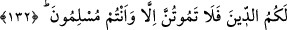

geldiği için ona “arkadan gelen” mânâsına “Ya’kûb” adını verdiler.
Bir başka izah tarzı da buna yakındır: Ya’kûb (a.s.)’ın annesi bir bâtında iki çocuğa
gebe kaldı. Hamilelik süresi bitip, doğum anı gelince annelerinin karnında konuştular.
Anneleri de bunu duyuyordu. Ya’kûb kardeşine, önce çıkmam için bana yol ver, dedi.
Kardeşi ise ona: “Eğer benden önce çıkarsan annemin karnını paramparça edip
böğründen çıkarım,” dedi. Ya’kûb: “Aman önce çık da annemi öldürme!” dedi. Böylece
önce çıkanı “Îys” diye isimlendirdiler, çünkü daha annesinin karnında iken ona âsî oldu.
Diğeri onu takib etti ve ikinci olarak onun ardından çıktı, ona da Ya’kûb dediler.
Îys, kaba ve katı yürekli birisi olarak yaşadı ve avcılıkla uğraştı. Ya’kûb (a.s.) ise
merhametli ve yumuşak huyluydu. Çiftçilik ve çobanlıkla uğraştı. İkisinin aynı günde
vefât ettikleri ve aynı kabre defnedildikleri nakledilmiştir. Ya’kûb (a.s.)’ın 147 sene
yaşadığı, Mısır’da öldüğü ve vasiyeti üzere mukaddes topraklara götürülüp babası
İshâk’ın yanına defnedildiği de söylenmiştir. Taşıma ve defn işini, Yûsuf (a.s.)
yapmıştır.
132. Bunu İbrâhîm de kendi oğullarına vasiyet etti, Ya’kûb da: Oğullarım! Allah
sizin için bu dîni (İslâm’ı) seçti. O halde sadece müslümanlar olarak ölünüz (dedi).
Ya’kûb dedi ki: “Ey Oğullarım! Allah dinlerin en safı olan İslâm’ı size din olarak
seçti -ki O’nun katında ondan başka da din yoktur-. Ancak tevhid inancını tam
benimsemiş olarak ve Rabbinizin size iyi muâmele edeceğini umarak ölüme
kavuşun.” Bu vasiyet görünüşte ölümü yasaklamadır. Gerçekte ise İslâm’ın terkini
yasaklamadır. Çünkü ölüm onların elinde değildir. Nasıl olsa bir gün ölecekler. Ölümün
ise ne zaman geleceği bilinmediğine göre, müslüman olarak ölmek için hiçbir sûrette
İslâm’dan uzaklaşmamak gerekir. Bu tavsiye olayı şöyle olmuştur:
Ya’kûb (a.s.) Mısır’a gelince halkın putlara taptığını gördü. Bunun üzerine oğullarına:
“Aman hiçbir şekilde İslâm’dan uzaklaşmayın,” diye tavsiyede bulundu. Çünkü onların
İslâm’da karar kılmadan ölmeleri hayırsız bir ölümdü. Ayrıca o, mutluluğa ermiş
kimselerin ölümü de değildi. Böyle bir ölüm zaten onlara yakışmazdı. Bu tavsiyeyi
sadece oğullarına yapmış olmasına rağmen İbrâhîm (a.s.)’ın bütün insanlığı dine,
İslâm’a dâvet ettiği bilinmektedir. İnsanlar arasında kendine en yakın, şefkat ve sevgi
açısından en lâyık kişilere bunu tavsiye etmesi, İslâm’da sebâtın, üzerinde en çok
durulması gereken konu olduğunu da gösterir. Oğullarının hallerinin düzgün olması
bütün insanlığın hâlinin düzgün olmasına sebeb olacağı için, bu tavsiye ile herkesin